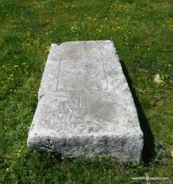

Izgled stećaka
 Jedan od najzanimljivijih osobina stećaka je njihov karakterističan oblik, i njihove dimenzije. Osnovna podjela stećaka je ležeće i stojeće. U prvoj grupi ulazi ploča, sanduk, sanduk sa postoljem, sljemenjak i sljemenjak sa postoljem. Najjednostavniji i najrasprostranjeniji oblik stećka jeste onaj u obliku ploče. Dobro klesana ploča uvijek je u obliku četverostrane ležeće prizme, do 30 cm visine. Dužina i širina ploče su različite, a zavisi od toga da li se radi o srednjoj, velikoj ili manjoj ploči. Stećci u obliku sanduka su u izvjesnoj mjeri viši stadij razvoja i transformacije stećaka u obliku ploča. Zbog toga se u većem broju pojavljuju tek u 14. stoljeću. Postepeno, oni postaju sve veći, sa postoljima, a često budu ukrašeni epitafima. Najčešće su dugački 150 cm, široki 100 cm, a visoki 80 cm, ali također ima vrlo velikih, kao i vrlo malih sanduka. Sanduci sa postoljem se ne razlikuju mnogo od običnih sanduka, samo što, ispod kamenog bloka se nalazi i kameno postolje. To postolje se koristilo kako bi se kamen uzdignuo. Također se postolje rezalo na više dijelova kako bi označilo da je više ljudi pokopano ispod stećka.
.jpg) Sljemenjak je, u biti, sanduk ćiji je gornji dio u obliku krova kuće na dvije vode. Krov može biti raznih oblika, a neki mogu imati četiri ili više krovnih ploča. Kao i kod sanduka sa postoljem, sljemenjak sa postoljem ima kamenu ploču ispod nje, koji je imao iste funkcije kao kod sanduka sa postoljem. Nažalost, ovakvih stećaka je vrlo malo, i čine samo 9% ukupnog broja stećaka.
Sljemenjak je, u biti, sanduk ćiji je gornji dio u obliku krova kuće na dvije vode. Krov može biti raznih oblika, a neki mogu imati četiri ili više krovnih ploča. Kao i kod sanduka sa postoljem, sljemenjak sa postoljem ima kamenu ploču ispod nje, koji je imao iste funkcije kao kod sanduka sa postoljem. Nažalost, ovakvih stećaka je vrlo malo, i čine samo 9% ukupnog broja stećaka.
.jpg) U stojećim stećcima spadaju stupovi i krstače. Stupovi su najjednostavniji oblik stojećih stećaka. Izgledaju kao uzdignute ploče, ali im je postolje šire u odnosu na vrh, i često mogu imati razne ukrase. Veoma su rijetki i čine samo 4% ukupnog broja stećaka. Krstače imaju oblik katoličkog krsta, što svjedoči utjecaj katoličke crkve na srednjovjekovnu Bosnu. Pojavljuju se pred kraj perioda stećaka, i zbog toga su veoma rijetki i vrijedni, čineći samo 0.5% ukupnog broja stećaka.
U stojećim stećcima spadaju stupovi i krstače. Stupovi su najjednostavniji oblik stojećih stećaka. Izgledaju kao uzdignute ploče, ali im je postolje šire u odnosu na vrh, i često mogu imati razne ukrase. Veoma su rijetki i čine samo 4% ukupnog broja stećaka. Krstače imaju oblik katoličkog krsta, što svjedoči utjecaj katoličke crkve na srednjovjekovnu Bosnu. Pojavljuju se pred kraj perioda stećaka, i zbog toga su veoma rijetki i vrijedni, čineći samo 0.5% ukupnog broja stećaka.